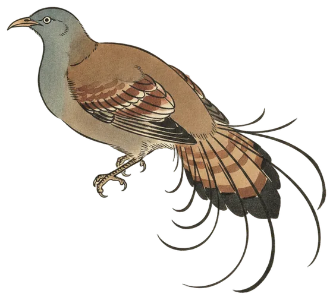

Lead story
Superb Lyrebird breaks into a quiet Friday
Two calls at 12:41 pm gave the Superb Lyrebird the lead today, while 15 species and 268 calls filled the 24 hours.

The Superb Lyrebird made its presence heard at 12:41 pm, with both of its calls in the 24 hours coming at that moment. It has been heard on 3 of the 65 days the station has been listening.
The bird is a moderately common one around Canberra and lives in the region year-round, yet midday records are scarce at this microphone. A single bird, heard and then gone, made for a short but striking appearance in an otherwise ordinary Friday.
One measure of the lyrebird's presence in the landscape: a single lyrebird can move and bury up to 200 tonnes of leaf litter and soil per hectare every year, helping reduce wildfire fuel.
- Calls
- 2
- First heard
- 12:41 pm
- Best call
- 86%
- Days heard
- 3 of 65